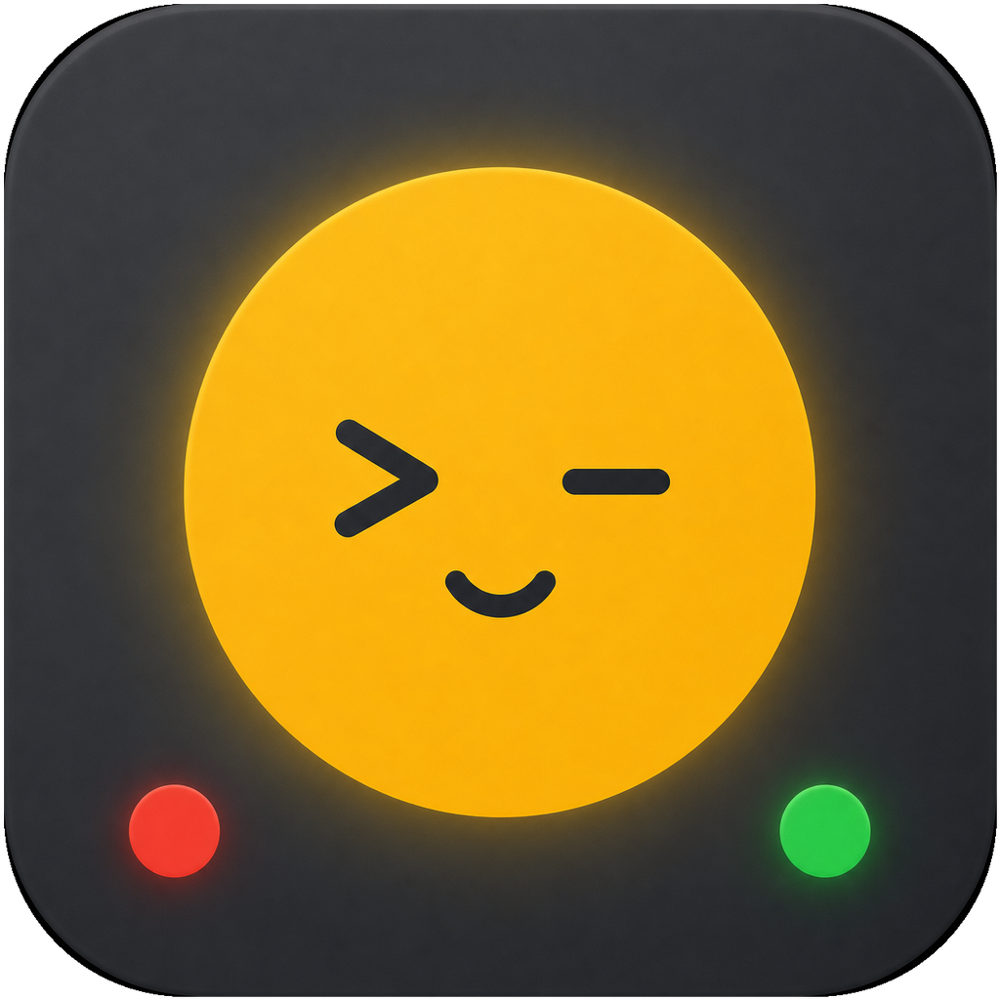

Agent-aware
Monitors CatDesk, Claude Code, Codex, Cursor, OpenClaw, Z Code, and OpenCode from local status sources.

macOS desktop appA floating signal light for AI agent work. See when your local agents are working, waiting for input, blocked by permission, or finished.
Monitors CatDesk, Claude Code, Codex, Cursor, OpenClaw, Z Code, and OpenCode from local status sources.
Keeps a compact floating light on screen, with idle, working, attention, error, and silent states.
Ships as a signed and notarized macOS DMG, with in-app update checks from public GitHub Releases.